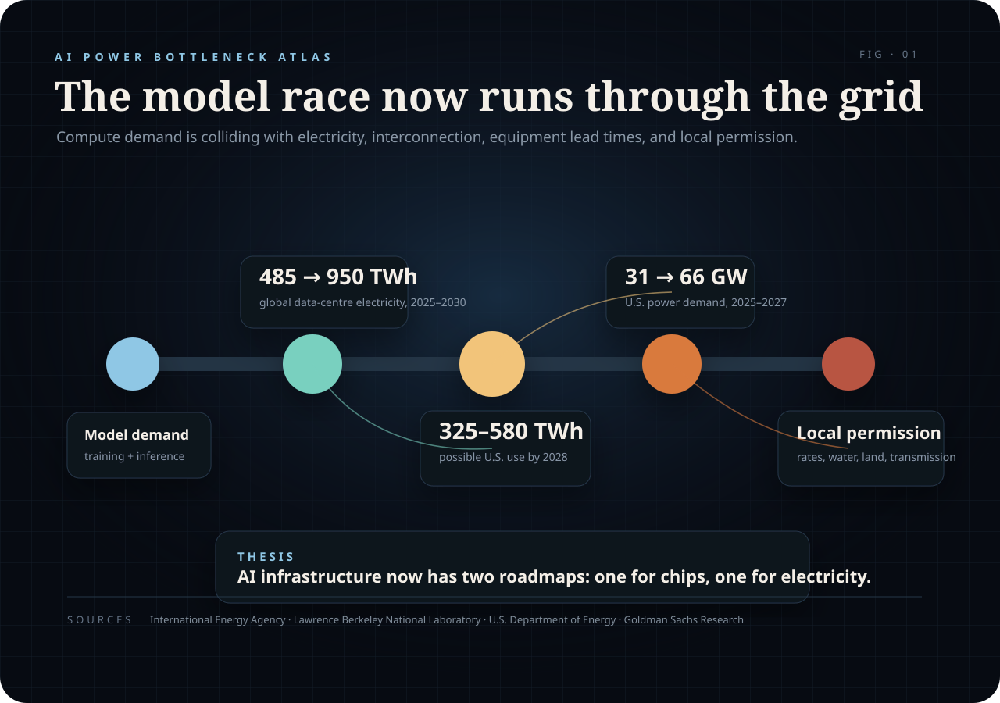
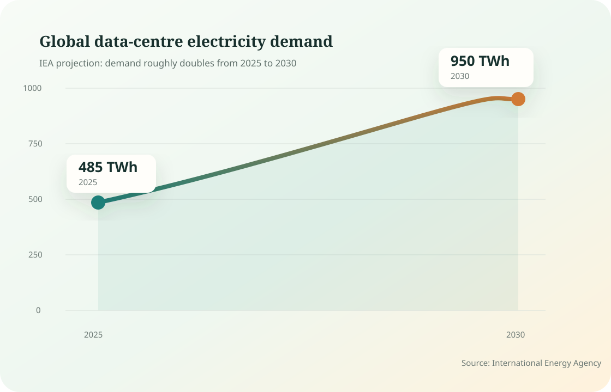
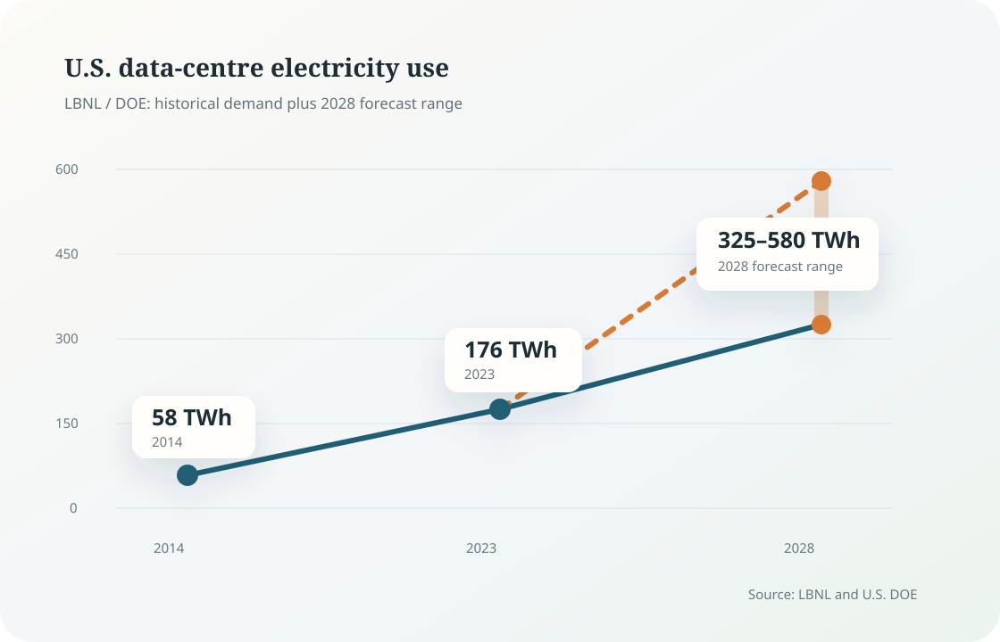
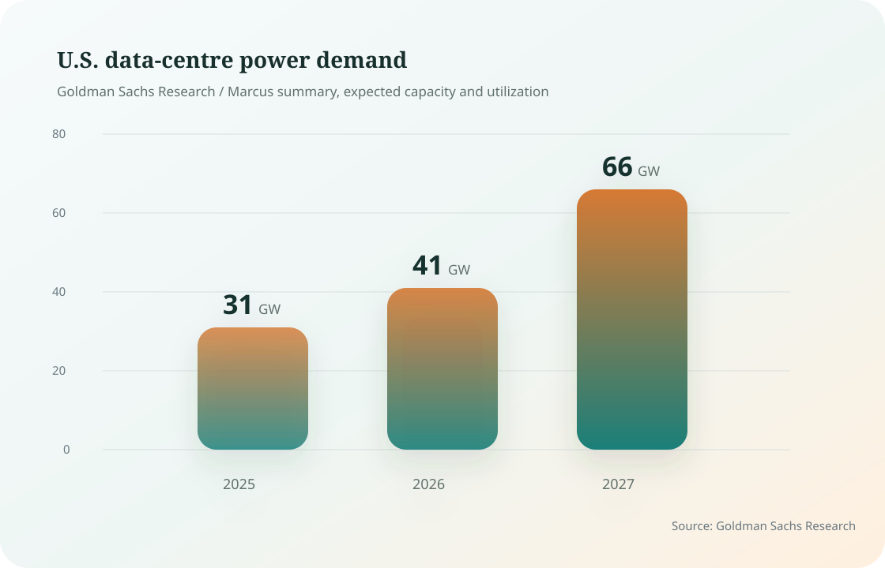

The companies that win the next phase of AI infrastructure will pair compute strategy with energy strategy.
GPU supply still matters. Model quality still matters. But the harder constraint is moving from a data-centre announcement to an energized site with enough power, cooling, transmission, permits, and local consent.
Every model demo hides a physical question underneath it: where does the electricity come from, how fast can the grid deliver it, who pays for the upgrade, and what happens when compute demand lands faster than transmission can be built?
The question has moved from theoretical to financial. The International Energy Agency projects global data-centre electricity consumption to rise from roughly 485 TWh in 2025 to around 950 TWh in 2030. In the IEA’s framing, data centres would account for about 3% of global electricity demand by 2030, with AI-focused facilities growing even faster.
In the United States, the curve is sharper. Lawrence Berkeley National Laboratory and the U.S. Department of Energy estimate U.S. data-centre electricity use rose from 58 TWh in 2014 to 176 TWh in 2023, and could reach 325–580 TWh by 2028.

1. The demand curve has changed shape
For a decade, data-centre energy demand looked manageable because efficiency gains absorbed much of the digital growth. AI changed the slope.

Slow demand can be absorbed through normal utility planning. Clustered demand forces utilities, regulators, and developers to make decisions under uncertainty.
2. The U.S. is the stress test
The U.S. has the deepest hyperscaler buildout, the largest concentration of AI infrastructure, and some of the most visible grid bottlenecks.

The wide forecast range is the signal. Planning has to happen before the industry knows which path demand will take.
3. Power demand is becoming an investment theme
Goldman Sachs Research frames the next bottleneck as a power-demand problem. Its research projects global data-centre power demand to rise by roughly 175% by 2030 versus 2023.

That changes the map of AI winners. The obvious beneficiaries are chipmakers and cloud platforms. The less obvious winners sit in the electrical stack: grid equipment, power developers, cooling systems, transmission, backup generation, and sites that can actually get energized.
4. Local politics will become part of AI strategy
Electricity demand is abstract until it appears on a bill, in a water debate, or at a county hearing.
A data centre may serve global AI demand, but the substation, water supply, land use, and transmission line sit in a specific place. Local communities still ask practical questions: will this project raise rates, consume scarce water, or delay power for homes and factories?
The next phase of AI infrastructure will be judged by benchmark scores and by the physical system around them.
5. Coordination is the real bottleneck
The AI industry is good at scaling software. The power grid scales through planning, capital, permitting, equipment lead times, and local politics.
Permitting takes time. Transmission takes time. Transformers take time. Gas turbines and substations take time. Data-centre developers can announce capacity faster than utilities can deliver it.
The winners will be the companies that secure power early, manage siting, reduce water stress, improve utilization, and treat energy as part of product strategy.
AI is still a model race. Increasingly, the model sits inside a power contract.
Source Table
| Claim | Source | Figure |
|---|---|---|
| Global data-centre electricity demand roughly doubles by 2030 | International Energy Agency | 485 TWh to 950 TWh |
| U.S. data-centre electricity use forecast range | Lawrence Berkeley National Laboratory / DOE | 325–580 TWh by 2028 |
| Global data-centre power demand growth | Goldman Sachs Research | +175% by 2030 vs. 2023 |